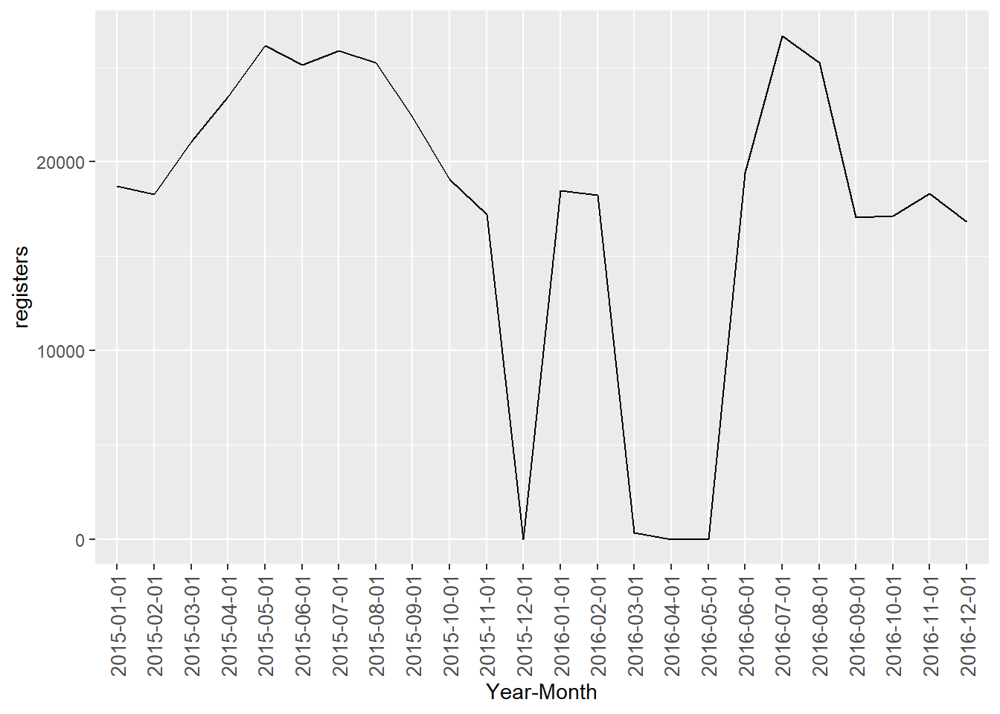
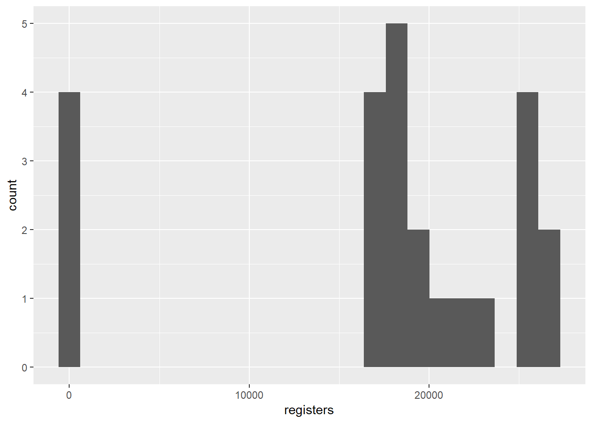
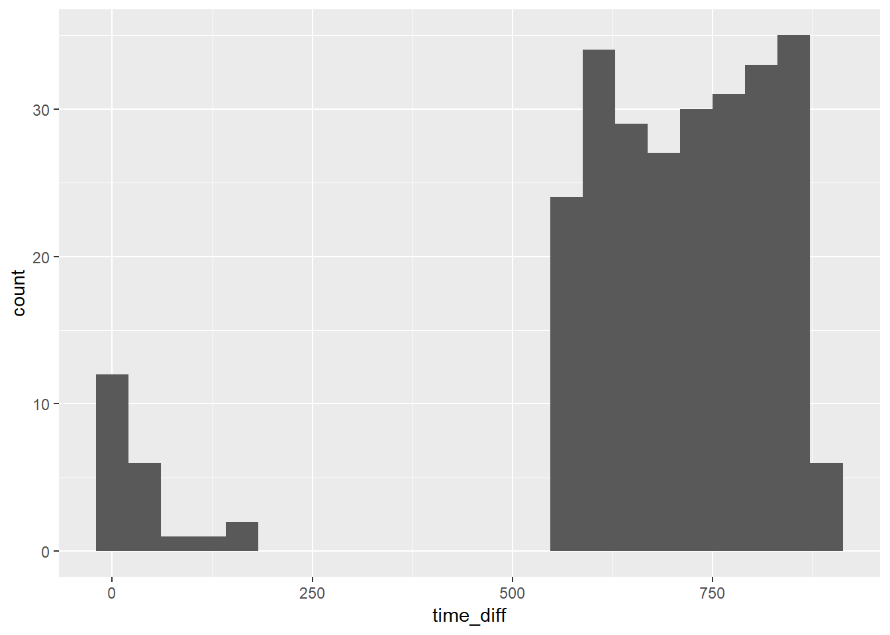
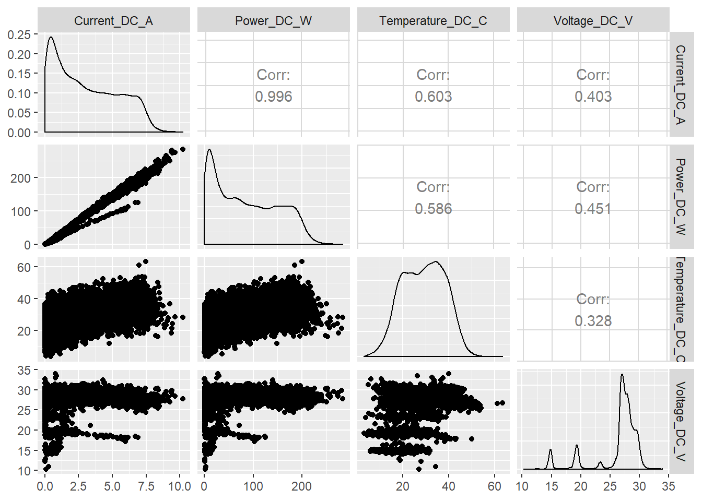
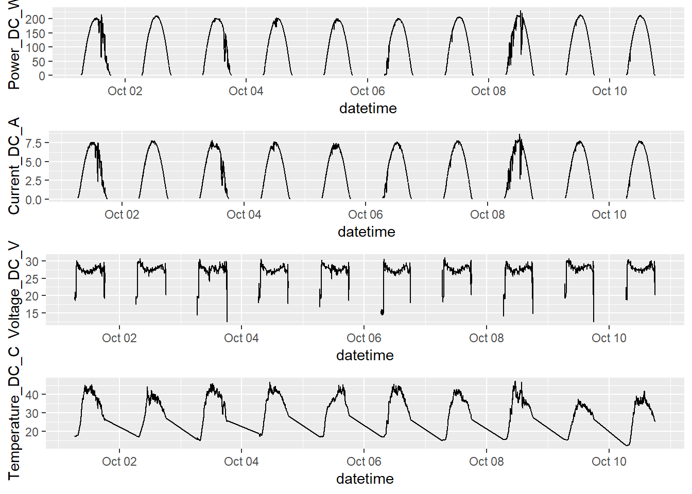
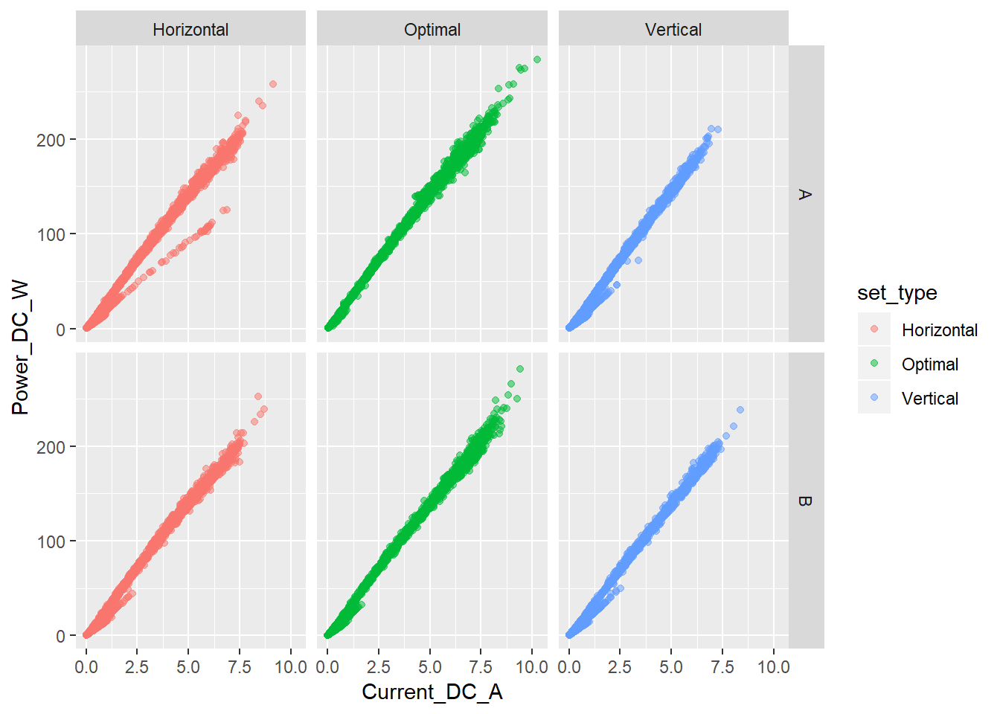
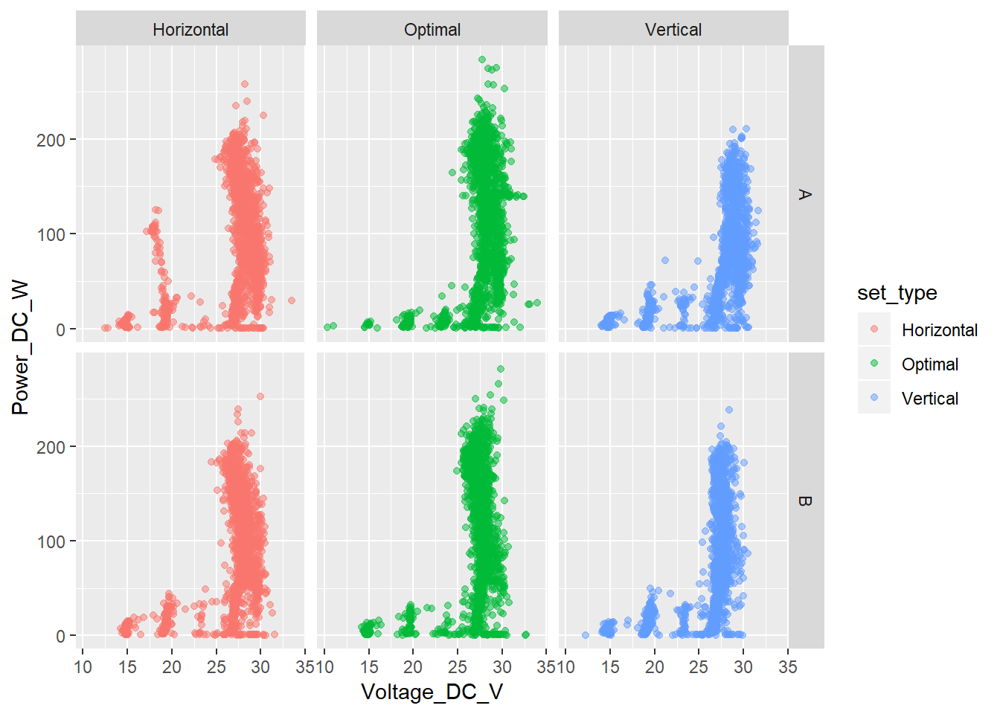
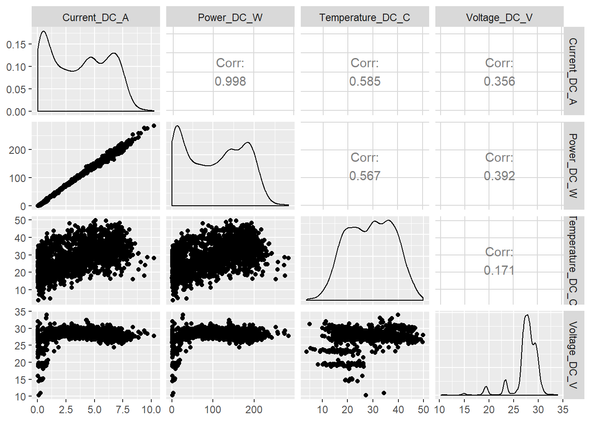
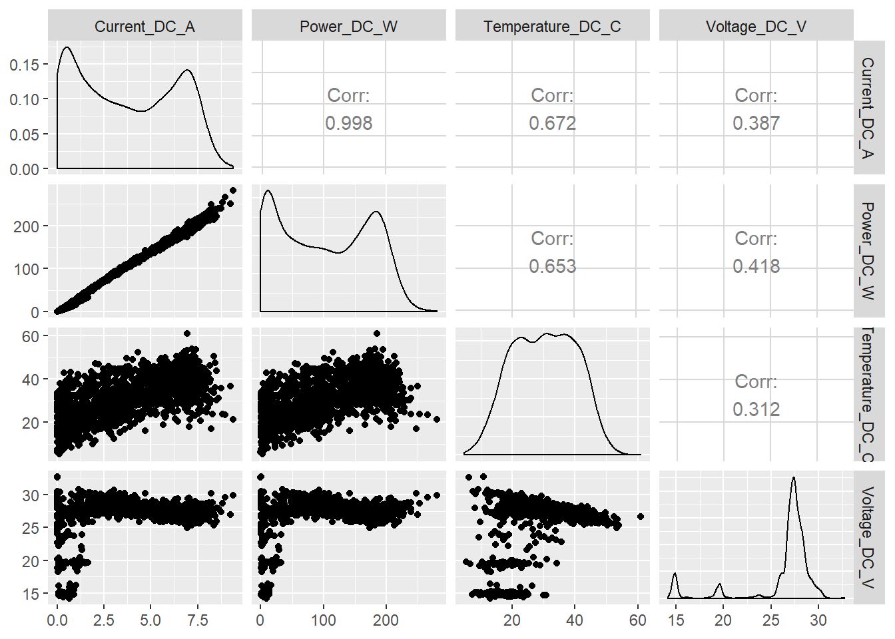

3 Solución reto ampliada.
Para comenzar recordemos el objetivo final de este reto: “Vuestro reto consiste en predecir la producción eléctrica en Watios que pueden generar los paneles A y B en su orientación óptima durante los siete primeros días del año 2017”. Es decir, se trata claramente de un ejercicio de regresión, y aunque inicialmente por el enunciado podría parecer un problema de “forecasting” (predicción a futuro) no lo es, ya que para predecir la producción eléctrica en cada momento disponemos de otras variables explicativas de ese mismo momento que podemos utilizar sin ningún tipo de restricción.
Así que como productos finales tenemos que tener dos predicciones de producción eléctrica en Watios para los 7 primeros días de 2017, una para cada tipo de panel.
Para generar y entrenar los modelos se nos proporcionaron los siguientes datasets:
sunlab-faro-pv-2015.csv
sunlab-faro-pv-2016.csv
sunlab-faro_meteo_2015.csv
sunlab-faro-meteo-2016.csv
Y para realizar nuestra predicción final estos otros:
test-sunlab-meteo-2017.xlsx
test-sunlab-pv-2017.xlsx
Todo el proceso previo a la generación de los modelos lo podíamos hacer con las herramientas que quisiésemos. Nosotros utilizamos R. Para la parte de modelado se nos dio acceso a una cuenta boost de BIGml.
3.1 Carga de las librerias necesarias.
Cargamos los paquetes que vamos a necesitar para el análisis
library(tidyverse)
library(lubridate)
library(readxl)
library(GGally)
library(caret)
library(knitr)
library(gridExtra)
library(kableExtra)3.2 Importación de los datos.
3.2.1 Datos “train”.
Los cuatro archivos de “train” facilitados en formato xls parecían tener algún tipo de problema. En el Hackathon no fuimos capaces de importarlo en R en ese formato. Así que los convertimos previamente en formato csv. En este ocasión lo que hemos hecho es ir a la página de EDP de Open Data y descargar los archivos directamente en formato csv.
Estos archivos csv utilizan como separador el punto y coma. Así que en este caso tendremos que utilizar la función read_delim() con el argumento delim = “;”.
meteo_2015 <- read_delim(file = "./data/original_data/train/sunlab-faro_meteo_2015.csv", delim = ";")
meteo_2016 <- read_delim(file = "./data/original_data/train/sunlab-faro-meteo-2016.csv", delim = ";")
prod_2015 <- read_delim(file = "./data/original_data/train/sunlab-faro-pv-2015.csv", delim = ";")
prod_2016 <- read_delim(file = "./data/original_data/train/sunlab-faro-pv-2016.csv", delim = ";")Unimos las tablas de distintos años de meteo y producción y nos quedamos con dos únicas tablas de train.
meteo_2015_2016 <- bind_rows(meteo_2015, meteo_2016)
prod_2015_2016 <- bind_rows(prod_2015, prod_2016)Borramos las tablas anteriores de train para que no nos ocupen espacio en memoria
rm(meteo_2015)
rm(meteo_2016)
rm(prod_2015)
rm(prod_2016)3.2.2 Datos “test”.
En este caso las tablas a importar estaban en formato xlsx y no tuvimos ningún problema a la hora de importarlas. Así que esta vez utilizaremos los archivos facilitados durante el Hackathon.
test_meteo_2017 <- read_xlsx(path = "./data/original_data/test/test-sunlab-meteo-2017.xlsx")
test_prod_2017 <- read_xlsx(path = "./data/original_data/test/test-sunlab-pv-2017.xlsx")3.3 Exploración y tratamiento de los datos.
3.3.1 Exploración inicial de las tablas.
En este apartado simplemente vamos a ver las variables que contiene cada tabla, el número de observaciones, formato, etc. También comprobaremos si las variables que tenemos en los datasets de train efectivamente están en las de test.
Echamos un vistazo a las variables y observaciones de la tabla de train de producción.
glimpse(prod_2015_2016)## Observations: 420,507
## Variables: 25
## $ Datetime <dttm> 2015-01-09 12:52:00, 2015-0...
## $ `A_Vertical - Voltage DC [V]` <dbl> 29.35, 29.10, 29.10, 29.35, ...
## $ `A_Vertical - Current DC [A]` <dbl> 6.4125, 6.3975, 6.3325, 6.41...
## $ `A_Vertical - Power DC [W]` <dbl> 188.206875, 186.167250, 184....
## $ `A_Optimal - Voltage DC [V]` <dbl> 28.75, 28.45, 28.45, 28.75, ...
## $ `A_Optimal - Current DC [A]` <dbl> 7.1700, 7.1925, 7.0925, 7.21...
## $ `A_Optimal - Power DC [W]` <dbl> 206.13750, 204.62662, 201.78...
## $ `A_Horizontal - Voltage DC [V]` <dbl> 29.25, 29.50, 29.45, 29.50, ...
## $ `A_Horizontal - Current DC [A]` <dbl> 4.3225, 4.2525, 4.1825, 4.30...
## $ `A_Horizontal - Power DC [W]` <dbl> 126.43313, 125.44875, 123.17...
## $ `A_Vertical - Temperature [ºC]` <dbl> 32.6, 32.4, 33.2, 32.2, 32.8...
## $ `A_Optimal - Temperature [ºC]` <dbl> 28.8, 28.6, 29.4, 28.2, 27.8...
## $ `A_Horizontal - Temperature [ºC]` <dbl> 26.5, 26.1, 26.8, 26.4, 26.1...
## $ `B_Vertical - Voltage DC [V]` <dbl> 27.55, 27.60, 27.40, 27.40, ...
## $ `B_Vertical - Current DC [A]` <dbl> 7.0925, 7.0475, 7.0100, 7.14...
## $ `B_Vertical - Power DC [W]` <dbl> 195.39837, 194.51100, 192.07...
## $ `B_Optimal - Voltage DC [V]` <dbl> 27.85, 28.05, 27.85, 28.05, ...
## $ `B_Optimal - Current DC [A]` <dbl> 7.2225, 7.1125, 7.0450, 7.17...
## $ `B_Optimal - Power DC [W]` <dbl> 201.14663, 199.50563, 196.20...
## $ `B_Horizontal - Voltage DC [V]` <dbl> 29.05, 29.05, 28.75, 28.95, ...
## $ `B_Horizontal - Current DC [A]` <dbl> 4.1775, 4.1275, 4.1125, 4.19...
## $ `B_Horizontal - Power DC [W]` <dbl> 121.356375, 119.903875, 118....
## $ `B_Vertical - Temperature [ºC]` <dbl> 31.2, 31.5, 31.9, 31.7, 32.2...
## $ `B_Optimal - Temperature [ºC]` <dbl> 30.2, 30.0, 30.9, 29.9, 30.7...
## $ `B_Horizontal - Temperature [ºC]` <dbl> 25.3, 24.9, 25.7, 25.1, 25.6...Vemos también los primeros 10 registros.
kable(head(prod_2015_2016, 10), booktab = TRUE)| Datetime | A_Vertical - Voltage DC [V] | A_Vertical - Current DC [A] | A_Vertical - Power DC [W] | A_Optimal - Voltage DC [V] | A_Optimal - Current DC [A] | A_Optimal - Power DC [W] | A_Horizontal - Voltage DC [V] | A_Horizontal - Current DC [A] | A_Horizontal - Power DC [W] | A_Vertical - Temperature [ºC] | A_Optimal - Temperature [ºC] | A_Horizontal - Temperature [ºC] | B_Vertical - Voltage DC [V] | B_Vertical - Current DC [A] | B_Vertical - Power DC [W] | B_Optimal - Voltage DC [V] | B_Optimal - Current DC [A] | B_Optimal - Power DC [W] | B_Horizontal - Voltage DC [V] | B_Horizontal - Current DC [A] | B_Horizontal - Power DC [W] | B_Vertical - Temperature [ºC] | B_Optimal - Temperature [ºC] | B_Horizontal - Temperature [ºC] |
|---|---|---|---|---|---|---|---|---|---|---|---|---|---|---|---|---|---|---|---|---|---|---|---|---|
| 2015-01-09 12:52:00 | 29.35 | 6.4125 | 188.2069 | 28.75 | 7.1700 | 206.1375 | 29.25 | 4.3225 | 126.4331 | 32.6 | 28.8 | 26.5 | 27.55 | 7.0925 | 195.3984 | 27.85 | 7.2225 | 201.1466 | 29.05 | 4.1775 | 121.3564 | 31.2 | 30.2 | 25.3 |
| 2015-01-09 12:14:00 | 29.10 | 6.3975 | 186.1672 | 28.45 | 7.1925 | 204.6266 | 29.50 | 4.2525 | 125.4488 | 32.4 | 28.6 | 26.1 | 27.60 | 7.0475 | 194.5110 | 28.05 | 7.1125 | 199.5056 | 29.05 | 4.1275 | 119.9039 | 31.5 | 30.0 | 24.9 |
| 2015-01-09 13:19:00 | 29.10 | 6.3325 | 184.2757 | 28.45 | 7.0925 | 201.7816 | 29.45 | 4.1825 | 123.1746 | 33.2 | 29.4 | 26.8 | 27.40 | 7.0100 | 192.0740 | 27.85 | 7.0450 | 196.2032 | 28.75 | 4.1125 | 118.2344 | 31.9 | 30.9 | 25.7 |
| 2015-01-09 12:41:00 | 29.35 | 6.4125 | 188.2069 | 28.75 | 7.2150 | 207.4313 | 29.50 | 4.3050 | 126.9975 | 32.2 | 28.2 | 26.4 | 27.40 | 7.1425 | 195.7045 | 28.05 | 7.1775 | 201.3289 | 28.95 | 4.1975 | 121.5176 | 31.7 | 29.9 | 25.1 |
| 2015-01-09 13:07:00 | 29.10 | 6.4050 | 186.3855 | 28.45 | 7.1975 | 204.7689 | 29.50 | 4.2600 | 125.6700 | 32.8 | 27.8 | 26.1 | 27.65 | 7.0300 | 194.3795 | 27.85 | 7.1550 | 199.2668 | 28.95 | 4.1625 | 120.5044 | 32.2 | 30.7 | 25.6 |
| 2015-01-09 12:57:00 | 29.00 | 6.4550 | 187.1950 | 28.45 | 7.2475 | 206.1914 | 29.25 | 4.3200 | 126.3600 | 33.3 | 29.6 | 26.8 | 27.40 | 7.1375 | 195.5675 | 27.85 | 7.2175 | 201.0074 | 28.80 | 4.2175 | 121.4640 | 31.7 | 30.9 | 25.7 |
| 2015-01-09 13:04:00 | 29.30 | 6.3950 | 187.3735 | 28.45 | 7.2275 | 205.6224 | 29.50 | 4.2800 | 126.2600 | 32.4 | 27.7 | 25.9 | 27.40 | 7.1225 | 195.1565 | 27.85 | 7.1750 | 199.8237 | 28.75 | 4.2050 | 120.8937 | 31.7 | 30.3 | 25.4 |
| 2015-01-09 13:20:00 | 29.10 | 6.3200 | 183.9120 | 28.45 | 7.0900 | 201.7105 | 29.25 | 4.2050 | 122.9963 | 33.1 | 29.1 | 26.7 | 27.15 | 7.0475 | 191.3396 | 27.85 | 7.0350 | 195.9247 | 27.75 | 4.2025 | 116.6194 | 32.0 | 31.0 | 25.8 |
| 2015-01-09 13:16:00 | 29.10 | 6.3750 | 185.5125 | 28.75 | 7.0700 | 203.2625 | 29.45 | 4.2025 | 123.7636 | 32.4 | 28.7 | 26.3 | 27.70 | 6.9725 | 193.1382 | 28.10 | 7.0425 | 197.8942 | 28.75 | 4.1475 | 119.2406 | 31.2 | 29.9 | 25.3 |
| 2015-01-09 12:48:00 | 29.30 | 6.4375 | 188.6188 | 28.75 | 7.2050 | 207.1438 | 29.50 | 4.3100 | 127.1450 | 32.1 | 28.4 | 26.4 | 27.60 | 7.1250 | 196.6500 | 28.05 | 7.2000 | 201.9600 | 29.05 | 4.1950 | 121.8648 | 30.8 | 29.5 | 25.0 |
Ejecutamos un summary() para observar los principales estadísticos de cada variable, NAs, etc.
summary(prod_2015_2016)## Datetime A_Vertical - Voltage DC [V]
## Min. :2015-01-01 07:40:00 Min. :10.20
## 1st Qu.:2015-05-28 18:54:30 1st Qu.:26.65
## Median :2015-10-08 17:39:00 Median :27.95
## Mean :2015-12-04 18:29:34 Mean :26.28
## 3rd Qu.:2016-07-19 14:47:30 3rd Qu.:29.10
## Max. :2016-12-29 17:31:00 Max. :35.05
## NA's :13979
## A_Vertical - Current DC [A] A_Vertical - Power DC [W]
## Min. :0.000 Min. : 0.00
## 1st Qu.:0.710 1st Qu.: 15.90
## Median :1.822 Median : 50.94
## Mean :2.252 Mean : 63.56
## 3rd Qu.:3.460 3rd Qu.:100.67
## Max. :8.105 Max. :245.18
## NA's :13979 NA's :13979
## A_Optimal - Voltage DC [V] A_Optimal - Current DC [A]
## Min. :10.10 Min. : 0.000
## 1st Qu.:27.05 1st Qu.: 1.097
## Median :27.90 Median : 3.482
## Mean :27.53 Mean : 3.574
## 3rd Qu.:28.95 3rd Qu.: 5.860
## Max. :35.30 Max. :10.238
## NA's :8342 NA's :8342
## A_Optimal - Power DC [W] A_Horizontal - Voltage DC [V]
## Min. : 0.00 Min. :10.10
## 1st Qu.: 30.74 1st Qu.:26.90
## Median : 99.79 Median :27.70
## Mean :100.48 Mean :26.53
## 3rd Qu.:165.06 3rd Qu.:28.90
## Max. :307.64 Max. :35.35
## NA's :8342 NA's :9039
## A_Horizontal - Current DC [A] A_Horizontal - Power DC [W]
## Min. : 0.000 Min. : 0.00
## 1st Qu.: 1.095 1st Qu.: 27.55
## Median : 2.930 Median : 83.44
## Mean : 3.163 Mean : 87.10
## 3rd Qu.: 5.055 3rd Qu.:140.21
## Max. :10.238 Max. :304.63
## NA's :9039 NA's :9039
## A_Vertical - Temperature [ºC] A_Optimal - Temperature [ºC]
## Min. : 1.80 Min. : 2.0
## 1st Qu.:22.60 1st Qu.:21.5
## Median :30.20 Median :29.0
## Mean :29.21 Mean :28.8
## 3rd Qu.:35.80 3rd Qu.:36.0
## Max. :52.80 Max. :58.6
##
## A_Horizontal - Temperature [ºC] B_Vertical - Voltage DC [V]
## Min. : 1.40 Min. :10.30
## 1st Qu.:20.70 1st Qu.:26.45
## Median :28.30 Median :27.00
## Mean :28.59 Mean :25.48
## 3rd Qu.:36.30 3rd Qu.:27.60
## Max. :64.80 Max. :34.65
## NA's :11201
## B_Vertical - Current DC [A] B_Vertical - Power DC [W]
## Min. :0.000 Min. : 0.00
## 1st Qu.:0.678 1st Qu.: 14.95
## Median :1.847 Median : 49.89
## Mean :2.382 Mean : 64.48
## 3rd Qu.:3.695 3rd Qu.:102.69
## Max. :9.078 Max. :255.99
## NA's :11201 NA's :11201
## B_Optimal - Voltage DC [V] B_Optimal - Current DC [A]
## Min. :10.35 Min. : 0.000
## 1st Qu.:26.70 1st Qu.: 1.083
## Median :27.35 Median : 3.438
## Mean :26.31 Mean : 3.654
## 3rd Qu.:28.00 3rd Qu.: 6.250
## Max. :35.15 Max. :10.238
## NA's :6730 NA's :6730
## B_Optimal - Power DC [W] B_Horizontal - Voltage DC [V]
## Min. : 0.00 Min. :10.65
## 1st Qu.: 27.08 1st Qu.:26.70
## Median : 96.81 Median :27.35
## Mean : 99.69 Mean :26.26
## 3rd Qu.:170.25 3rd Qu.:28.35
## Max. :302.01 Max. :35.10
## NA's :6730 NA's :11902
## B_Horizontal - Current DC [A] B_Horizontal - Power DC [W]
## Min. : 0.000 Min. : 0.00
## 1st Qu.: 1.077 1st Qu.: 25.83
## Median : 2.857 Median : 81.42
## Mean : 3.120 Mean : 85.54
## 3rd Qu.: 4.980 3rd Qu.:139.04
## Max. :10.238 Max. :300.98
## NA's :11902 NA's :11902
## B_Vertical - Temperature [ºC] B_Optimal - Temperature [ºC]
## Min. : 3.20 Min. : 2.30
## 1st Qu.:23.50 1st Qu.:22.50
## Median :30.50 Median :30.90
## Mean :29.53 Mean :30.67
## 3rd Qu.:35.70 3rd Qu.:38.70
## Max. :51.10 Max. :62.00
##
## B_Horizontal - Temperature [ºC]
## Min. : 1.60
## 1st Qu.:21.10
## Median :28.30
## Mean :28.59
## 3rd Qu.:36.10
## Max. :62.10
## En principio, a excepción de los NAs de alguna variable, no vemos a problemas evidentes con este dataset. Sí que la estructura de la tabla no nos parece la ideal, pero esto lo trataremos más tarde.
Echamos un vistazo también a los datos de test de producción.
glimpse(test_prod_2017)## Observations: 4,243
## Variables: 25
## $ Datetime <chr> "2017-01-01T07:52:00+00:00",...
## $ `A_Vertical - Voltage DC [V]` <dbl> 19.25, 19.25, 19.20, 19.30, ...
## $ `A_Vertical - Current DC [A]` <dbl> 0.0750, 0.0850, 0.1175, 0.27...
## $ `A_Vertical - Power DC [W]` <dbl> 1.44375, 1.63625, 2.25600, 5...
## $ `A_Optimal - Voltage DC [V]` <dbl> 21.60, 32.15, 32.75, 32.95, ...
## $ `A_Optimal - Current DC [A]` <dbl> 0.1075, 0.0450, 0.0450, 0.16...
## $ `A_Optimal - Power DC [W]` <chr> "=E2*F2", NA, NA, NA, NA, NA...
## $ `A_Horizontal - Voltage DC [V]` <dbl> 18.80, 18.80, 18.75, 18.75, ...
## $ `A_Horizontal - Current DC [A]` <dbl> 0.0650, 0.0725, 0.0800, 0.10...
## $ `A_Horizontal - Power DC [W]` <dbl> 1.22200, 1.36300, 1.50000, 1...
## $ `A_Vertical - Temperature [ºC]` <dbl> 4.5, 4.7, 4.8, 5.0, 5.1, 5.3...
## $ `A_Optimal - Temperature [ºC]` <dbl> 4.0, 4.2, 4.5, 4.6, 4.8, 5.0...
## $ `A_Horizontal - Temperature [ºC]` <dbl> 3.3, 3.5, 3.7, 3.9, 4.1, 4.2...
## $ `B_Vertical - Voltage DC [V]` <dbl> 18.90, 18.90, 18.90, 18.90, ...
## $ `B_Vertical - Current DC [A]` <dbl> 0.0700, 0.0800, 0.0925, 0.10...
## $ `B_Vertical - Power DC [W]` <dbl> 1.323000, 1.512000, 1.748250...
## $ `B_Optimal - Voltage DC [V]` <dbl> 21.50, 20.95, 31.65, 33.30, ...
## $ `B_Optimal - Current DC [A]` <dbl> 0.0825, 0.0925, 0.0250, 0.02...
## $ `B_Optimal - Power DC [W]` <lgl> NA, NA, NA, NA, NA, NA, NA, ...
## $ `B_Horizontal - Voltage DC [V]` <dbl> 21.45, 19.70, 19.75, 31.25, ...
## $ `B_Horizontal - Current DC [A]` <dbl> 0.10753, 0.07750, 0.08500, 0...
## $ `B_Horizontal - Power DC [W]` <dbl> 2.306519, 1.526750, 1.678750...
## $ `B_Vertical - Temperature [ºC]` <dbl> 4.8, 4.9, 5.1, 5.3, 5.4, 5.6...
## $ `B_Optimal - Temperature [ºC]` <dbl> 4.1, 4.3, 4.5, 4.7, 4.9, 5.0...
## $ `B_Horizontal - Temperature [ºC]` <dbl> 3.2, 3.4, 3.6, 3.8, 3.9, 4.1...El formato de alguna de las variables no es el correcto. ‘Datetime’ aparece como caracter y hay un par de variables numéricas que no han sido debidamente identificadas. Y como el dataset de train la estructura de la tabla no es la mejor. Todo esto lo corregiremos más adelante también.
Con el siguiente código comprobamos que las variables que tenemos en train también las tenemos en test.
prod_train_var <- names(prod_2015_2016)
prod_test_var <- names(test_prod_2017)
all.equal.character(prod_train_var, prod_test_var)## [1] TRUErm(prod_train_var)
rm(prod_test_var)Echamos también un vistazo a los datos meteorológicos.
glimpse(meteo_2015_2016)## Observations: 836,903
## Variables: 10
## $ Datetime <dttm> 2015-10-29 01:43:00, 2015-10-29 ...
## $ `Ambient Temperature [ºC]` <dbl> 14.60000, 14.10000, 14.00000, 13....
## $ `Global Radiation [W/m2]` <dbl> 1.415117, 1.693405, 1.728471, 1.4...
## $ `Diffuse Radiation [W/m2]` <dbl> 1.644703, 1.639023, 1.653051, 1.6...
## $ `Ultraviolet [W/m2]` <dbl> 0.510503, 0.504588, 0.513537, 0.5...
## $ `Wind Velocity [m/s]` <dbl> 0.966667, 0.233333, 0.383333, 0.3...
## $ `Wind Direction [º]` <dbl> 52.81666, 14.49223, 62.99665, 246...
## $ `Precipitation [mm]` <dbl> NA, NA, NA, NA, NA, NA, NA, NA, N...
## $ `Atmospheric pressure [hPa]` <dbl> NA, NA, NA, NA, NA, NA, NA, NA, N...
## $ `Direct Radiation [W/m2]` <dbl> NA, NA, NA, NA, NA, NA, NA, NA, N...head(meteo_2015_2016)## # A tibble: 6 x 10
## Datetime `Ambient Temper~ `Global Radiati~ `Diffuse Radiat~
## <dttm> <dbl> <dbl> <dbl>
## 1 2015-10-29 01:43:00 14.6 1.42 1.64
## 2 2015-10-29 01:56:00 14.1 1.69 1.64
## 3 2015-10-29 02:00:00 14 1.73 1.65
## 4 2015-10-29 02:09:00 13.9 1.48 1.65
## 5 2015-10-29 02:13:00 14.0 1.42 1.64
## 6 2015-10-29 02:15:00 14 1.51 1.65
## # ... with 6 more variables: `Ultraviolet [W/m2]` <dbl>, `Wind Velocity
## # [m/s]` <dbl>, `Wind Direction [º]` <dbl>, `Precipitation [mm]` <dbl>,
## # `Atmospheric pressure [hPa]` <dbl>, `Direct Radiation [W/m2]` <dbl>summary(meteo_2015_2016)## Datetime Ambient Temperature [ºC]
## Min. :2015-01-01 00:00:00 Min. :-1.500e+09
## 1st Qu.:2015-05-26 11:06:30 1st Qu.: 1.400e+01
## Median :2015-10-18 23:12:00 Median : 1.800e+01
## Mean :2015-11-27 03:00:27 Mean :-5.358e+03
## 3rd Qu.:2016-05-17 18:32:30 3rd Qu.: 2.300e+01
## Max. :2016-12-31 23:00:00 Max. : 3.800e+01
##
## Global Radiation [W/m2] Diffuse Radiation [W/m2] Ultraviolet [W/m2]
## Min. : 0.7285 Min. : 1.6 Min. : 0.4954
## 1st Qu.: 1.5693 1st Qu.: 1.7 1st Qu.: 0.5106
## Median : 13.0063 Median : 16.5 Median : 1.5008
## Mean : 237.1203 Mean : 68.2 Mean :14.5440
## 3rd Qu.: 452.7272 3rd Qu.:103.7 3rd Qu.:26.0017
## Max. :1421.3282 Max. :720.4 Max. :84.2660
## NA's :399744
## Wind Velocity [m/s] Wind Direction [º] Precipitation [mm]
## Min. :-1.500e+09 Min. : 0.0 Min. :0
## 1st Qu.: 1.000e+00 1st Qu.:123.6 1st Qu.:0
## Median : 2.000e+00 Median :235.8 Median :0
## Mean :-5.375e+03 Mean :212.8 Mean :0
## 3rd Qu.: 3.000e+00 3rd Qu.:296.7 3rd Qu.:0
## Max. : 1.200e+01 Max. :360.0 Max. :2
## NA's :776160
## Atmospheric pressure [hPa] Direct Radiation [W/m2]
## Min. : 999.1 Min. : 1.6
## 1st Qu.:1014.3 1st Qu.: 1.7
## Median :1020.4 Median : 8.6
## Mean :1019.9 Mean : 63.9
## 3rd Qu.:1025.7 3rd Qu.: 91.9
## Max. :1033.8 Max. :790.1
## NA's :776160 NA's :437159En este dataset vemos a primera vista más problemas. Hay 4 variables con un gran número de NAs: Diffuse Radiation [W/m2], Precipitation [mm], Atmospheric pressure [hPa] y Direct Radiation [W/m2]. Y aparte de esto también parece haber un problema con los valores mínimos de Ambient Temperature [ºC] y Wind Velocity [m/s].
Vemos también los datos meteorológicos de test.
glimpse(test_meteo_2017)## Observations: 10,080
## Variables: 9
## $ Datetime <chr> "2017-01-01T00:00:00+01:00", "201...
## $ `Ambient Temperature [ºC]` <dbl> 6.333334, 6.300000, 6.216667, 6.2...
## $ `Global Radiation [W/m2]` <dbl> 1.684853, 1.761459, 1.854881, 2.1...
## $ `Diffuse Radiation [W/m2]` <dbl> 1.668379, 1.654411, 1.762080, 1.8...
## $ `Ultraviolet [W/m2]` <dbl> 0.503180, 0.501983, 0.501479, 0.5...
## $ `Wind Velocity [m/s]` <dbl> 4.033333, 4.583334, 4.750000, 4.9...
## $ `Wind Direction [º]` <dbl> 313.3343, 307.6674, 307.4994, 307...
## $ `Precipitation [mm]` <dbl> 0, 0, 0, 0, 0, 0, 0, 0, 0, 0, 0, ...
## $ `Atmospheric pressure [hPa]` <dbl> 1014.433, 1014.400, 1014.383, 101...Y comprobamos que las variables que tenemos en train también las tenemos en test.
meteo_train_var <- names(meteo_2015_2016)
meteo_test_var <- names(test_meteo_2017)
all.equal.character(meteo_train_var, meteo_test_var)## [1] "Lengths (10, 9) differ (string compare on first 9)"rm(meteo_train_var)
rm(meteo_test_var)El dataset de test de meteo tiene solo 9 variables, una menos que la de train. En el dataset de test no aparece el campo ‘Direct Radiation [W/m2]’. Tenemos que tener en cuenta este detalle si finalmente utilizamos este dataset para nuestros modelos.
3.3.2 Calidad de los datos.
En el Hackathon fuimos directamente a cruzar las tablas de producción e información meteorológica para tener lo antes posible un dataset de train para subir a la herramienta BIGml (además del dataset de producción nos quedamos sólo con la variable target: ‘Power_DC’). Por diversos problemas con el formato de los datos esta parte nos consumió muchísimo tiempo y la parte de exploración de datos fue reducida a la mínima expresión. En este caso vamos a dedicar más tiempo a este parte del análisis.
3.3.2.1 Dataset de producción “prod_2015_2016”.
3.3.2.1.1 Completitud de los datos.
En este apartado vamos a revisar el número de registros que tenemos, si varían con el tiempo y vamos a determinar la frecuencia de registros de los mismos.
3.3.2.1.2 Número y frecuencia de registros.
Comparamos el número de registros de 2016 contra 2015. En 2016 hay sensiblemente menos registros que en 2015.
registers_by_year <- prod_2015_2016 %>%
select(Datetime) %>%
group_by(year = year(prod_2015_2016$Datetime)) %>%
summarise(registers = n())
registers_by_year## # A tibble: 2 x 2
## year registers
## <dbl> <int>
## 1 2015 242735
## 2 2016 177772rm(registers_by_year)Para tratar de ver con más detalle la naturaleza de estas diferencias echamos un vistazo a la la distribución por año-mes.
registers_by_year_month <- prod_2015_2016 %>%
select(Datetime) %>%
group_by(year = year(prod_2015_2016$Datetime),
month = month(prod_2015_2016$Datetime)) %>%
summarise(registers = n())
kable(registers_by_year_month) %>% kable_styling()| year | month | registers |
|---|---|---|
| 2015 | 1 | 18730 |
| 2015 | 2 | 18297 |
| 2015 | 3 | 21094 |
| 2015 | 4 | 23460 |
| 2015 | 5 | 26183 |
| 2015 | 6 | 25146 |
| 2015 | 7 | 25908 |
| 2015 | 8 | 25252 |
| 2015 | 9 | 22380 |
| 2015 | 10 | 19067 |
| 2015 | 11 | 17218 |
| 2016 | 1 | 18492 |
| 2016 | 2 | 18250 |
| 2016 | 3 | 342 |
| 2016 | 6 | 19413 |
| 2016 | 7 | 26682 |
| 2016 | 8 | 25243 |
| 2016 | 9 | 17067 |
| 2016 | 10 | 17133 |
| 2016 | 11 | 18313 |
| 2016 | 12 | 16837 |
A destacar que en diciembre de 2015 y en abril y mayo de 2016 no hay ni un solo dato. Además en marzo de 2016 apenas hay registros. El resto de variaciones entre meses parecen estar simplemente relacionadas con las horas de sol, menos en invierno, más en verano.
Visualizamos los datos de la tabla en un gráfico. Pero antes añadimos los registros de año-meses que no aparecen con el valor ‘0’.
registers_by_year_month <- registers_by_year_month %>%
ungroup() %>%
add_row(year = c('2015', '2016', '2016'),
month = c('12', '4', '5'),
registers = '0') %>%
mutate(year = as.factor(year),
month = as.factor(month),
registers = as.numeric(registers))
registers_by_year_month_1 <- registers_by_year_month %>%
mutate(day = "01") %>%
unite(year_month, year, month, day, sep = '-') %>%
mutate(year_month = ymd(year_month))
ggplot(data = registers_by_year_month_1, aes(x = as.factor(year_month), y = registers, group = 1)) +
geom_line() +
theme(axis.text.x=element_text(angle=90,hjust=1,vjust=0.5, size = 10)) +
labs(x = 'Year-Month')
rm(registers_by_year_month)Ejecutamos la función summary() para observar mejor la distribución de los datos.
summary(registers_by_year_month_1) ## year_month registers
## Min. :2015-01-01 Min. : 0
## 1st Qu.:2015-06-23 1st Qu.:17117
## Median :2015-12-16 Median :18611
## Mean :2015-12-16 Mean :17521
## 3rd Qu.:2016-06-08 3rd Qu.:23882
## Max. :2016-12-01 Max. :26682Y lo representamos en un histograma.
ggplot(data = registers_by_year_month_1, aes(x = registers)) +
geom_histogram(bins = 23) 
rm(registers_by_year_month_1)Todos los meses, excepto 4 (los mencionados anteriormente), se encuentran entre los 18.000 y 27.000 registros.
Vamos a estimar la frecuencia de generación de los registros. Para ello restaremos a cada Datetime de cada registro su correspondiente Datetime anterior (Datetime_lagged) creando la variable time_diff, que nos dirá los minutos trascurridos entre cada registro. Una vez hecho esto hacemos un simple conteo de todas las diferencias entre registros.
register_frequency <- prod_2015_2016 %>%
select(Datetime) %>%
arrange(Datetime) %>% # Importante. Antes hay que ordenar los registros por Datetime.
mutate(Datetime_lagged = lag(Datetime)) %>%
mutate(time_diff = Datetime - Datetime_lagged) %>%
na.omit()
intervals_count <- register_frequency %>%
select(time_diff) %>%
group_by(time_diff) %>%
summarise(n = n()) %>%
arrange(desc(n))
kable(head(intervals_count, 20))| time_diff | n |
|---|---|
| 1 mins | 419840 |
| 2 mins | 29 |
| 6 mins | 11 |
| 7 mins | 11 |
| 579 mins | 10 |
| 8 mins | 9 |
| 566 mins | 9 |
| 565 mins | 8 |
| 572 mins | 8 |
| 855 mins | 8 |
| 569 mins | 7 |
| 854 mins | 7 |
| 570 mins | 6 |
| 587 mins | 6 |
| 777 mins | 6 |
| 809 mins | 6 |
| 833 mins | 6 |
| 563 mins | 5 |
| 568 mins | 5 |
| 577 mins | 5 |
Lo que vemos es que en principio el registro de mediciones estaría programado para realizarse cada minuto, porque este es con diferencia el intervalo entre registros más frecuente.
Si efectivamente se registrase una medición cada minuto el número de mediciones entre 2015 y 2016 sería de 1.051.200. En la tabla hay 420.507 registros. Pero en principio si tenemos en cuenta las horas sin luz, en los que lógicamente no hay producción de electricidad, más los tres meses sin datos y los pocos datos de marzo de 2016 el número de registros en las tablas cuadran (en un caso real habría que hablar con los responsables de los datos para conocer las causas de la falta de datos; en un ejercicio como este no podemos ir más allá).
(two_year_minutes <- 2*365*24*60)## [1] 1051200Echamos un vistazo a las distribuciones de la duración de las paradas (excluyendo las de 1 minuto y las mayores de 15 horas).
stops <- intervals_count %>%
mutate(time_diff = as.numeric(time_diff)) %>%
filter(time_diff > 1,
time_diff < 900) # En 2019 el día más largo del año en Faro será el 21 de junio con 14 horas y 42 minutos (asi que filtramos por debajo de 15 horas)
summary(stops$time_diff)## Min. 1st Qu. Median Mean 3rd Qu. Max.
## 2.0 613.5 709.0 665.3 799.5 894.0Lo vemos también en un histograma.
ggplot(data = stops, aes(x = time_diff)) +
geom_histogram(bins = 23)  El número total de paradas con duración compatible con paradas por falta de luz cuadra con los datos vistos hasta ahora.
night_stops <- intervals_count %>%
mutate(time_diff = as.numeric(time_diff)) %>%
filter(time_diff > 500) %>%
summarise(stops = sum(n))
night_stops## # A tibble: 1 x 1
## stops
## <int>
## 1 580rm(stops, night_stops, intervals_count)3.3.2.1.3 Análisis de NAs (valores faltantes).
Generamos una tabla donde vemos hasta que punto cada variable del dataset está “completo” (un valor de 0.97 significa que la variable en cuestión tiene un 3% de NAs). Vemos que en general los registros presentes en la tabla tienen una alta completitud de datos.
data_nas <- prod_2015_2016 %>%
group_by(year = year(Datetime), month(Datetime)) %>%
summarise_all(funs(round(sum(!is.na(.))/n(), 2))) # We obtain the proportion of 'not NAs'
kable(data_nas) %>%
kable_styling() %>%
scroll_box()| year | month(Datetime) | Datetime | A_Vertical - Voltage DC [V] | A_Vertical - Current DC [A] | A_Vertical - Power DC [W] | A_Optimal - Voltage DC [V] | A_Optimal - Current DC [A] | A_Optimal - Power DC [W] | A_Horizontal - Voltage DC [V] | A_Horizontal - Current DC [A] | A_Horizontal - Power DC [W] | A_Vertical - Temperature [ºC] | A_Optimal - Temperature [ºC] | A_Horizontal - Temperature [ºC] | B_Vertical - Voltage DC [V] | B_Vertical - Current DC [A] | B_Vertical - Power DC [W] | B_Optimal - Voltage DC [V] | B_Optimal - Current DC [A] | B_Optimal - Power DC [W] | B_Horizontal - Voltage DC [V] | B_Horizontal - Current DC [A] | B_Horizontal - Power DC [W] | B_Vertical - Temperature [ºC] | B_Optimal - Temperature [ºC] | B_Horizontal - Temperature [ºC] |
|---|---|---|---|---|---|---|---|---|---|---|---|---|---|---|---|---|---|---|---|---|---|---|---|---|---|---|
| 2015 | 1 | 1 | 0.97 | 0.97 | 0.97 | 0.98 | 0.98 | 0.98 | 0.97 | 0.97 | 0.97 | 1 | 1 | 1 | 0.97 | 0.97 | 0.97 | 0.98 | 0.98 | 0.98 | 0.96 | 0.96 | 0.96 | 1 | 1 | 1 |
| 2015 | 2 | 1 | 0.96 | 0.96 | 0.96 | 0.98 | 0.98 | 0.98 | 0.98 | 0.98 | 0.98 | 1 | 1 | 1 | 0.97 | 0.97 | 0.97 | 0.98 | 0.98 | 0.98 | 0.97 | 0.97 | 0.97 | 1 | 1 | 1 |
| 2015 | 3 | 1 | 0.97 | 0.97 | 0.97 | 0.98 | 0.98 | 0.98 | 0.98 | 0.98 | 0.98 | 1 | 1 | 1 | 0.97 | 0.97 | 0.97 | 0.99 | 0.99 | 0.99 | 0.97 | 0.97 | 0.97 | 1 | 1 | 1 |
| 2015 | 4 | 1 | 0.96 | 0.96 | 0.96 | 0.98 | 0.98 | 0.98 | 0.98 | 0.98 | 0.98 | 1 | 1 | 1 | 0.97 | 0.97 | 0.97 | 0.98 | 0.98 | 0.98 | 0.97 | 0.97 | 0.97 | 1 | 1 | 1 |
| 2015 | 5 | 1 | 0.97 | 0.97 | 0.97 | 0.98 | 0.98 | 0.98 | 0.99 | 0.99 | 0.99 | 1 | 1 | 1 | 0.98 | 0.98 | 0.98 | 0.99 | 0.99 | 0.99 | 0.98 | 0.98 | 0.98 | 1 | 1 | 1 |
| 2015 | 6 | 1 | 0.98 | 0.98 | 0.98 | 0.99 | 0.99 | 0.99 | 0.99 | 0.99 | 0.99 | 1 | 1 | 1 | 0.99 | 0.99 | 0.99 | 0.99 | 0.99 | 0.99 | 0.98 | 0.98 | 0.98 | 1 | 1 | 1 |
| 2015 | 7 | 1 | 0.97 | 0.97 | 0.97 | 0.98 | 0.98 | 0.98 | 0.98 | 0.98 | 0.98 | 1 | 1 | 1 | 0.98 | 0.98 | 0.98 | 0.99 | 0.99 | 0.99 | 0.98 | 0.98 | 0.98 | 1 | 1 | 1 |
| 2015 | 8 | 1 | 0.97 | 0.97 | 0.97 | 0.98 | 0.98 | 0.98 | 0.98 | 0.98 | 0.98 | 1 | 1 | 1 | 0.98 | 0.98 | 0.98 | 0.98 | 0.98 | 0.98 | 0.97 | 0.97 | 0.97 | 1 | 1 | 1 |
| 2015 | 9 | 1 | 0.97 | 0.97 | 0.97 | 0.98 | 0.98 | 0.98 | 0.98 | 0.98 | 0.98 | 1 | 1 | 1 | 0.97 | 0.97 | 0.97 | 0.98 | 0.98 | 0.98 | 0.97 | 0.97 | 0.97 | 1 | 1 | 1 |
| 2015 | 10 | 1 | 0.95 | 0.95 | 0.95 | 0.97 | 0.97 | 0.97 | 0.97 | 0.97 | 0.97 | 1 | 1 | 1 | 0.96 | 0.96 | 0.96 | 0.98 | 0.98 | 0.98 | 0.97 | 0.97 | 0.97 | 1 | 1 | 1 |
| 2015 | 11 | 1 | 0.95 | 0.95 | 0.95 | 0.97 | 0.97 | 0.97 | 0.97 | 0.97 | 0.97 | 1 | 1 | 1 | 0.96 | 0.96 | 0.96 | 0.98 | 0.98 | 0.98 | 0.96 | 0.96 | 0.96 | 1 | 1 | 1 |
| 2016 | 1 | 1 | 0.95 | 0.95 | 0.95 | 0.97 | 0.97 | 0.97 | 0.97 | 0.97 | 0.97 | 1 | 1 | 1 | 0.96 | 0.96 | 0.96 | 0.98 | 0.98 | 0.98 | 0.96 | 0.96 | 0.96 | 1 | 1 | 1 |
| 2016 | 2 | 1 | 0.96 | 0.96 | 0.96 | 0.98 | 0.98 | 0.98 | 0.98 | 0.98 | 0.98 | 1 | 1 | 1 | 0.97 | 0.97 | 0.97 | 0.98 | 0.98 | 0.98 | 0.97 | 0.97 | 0.97 | 1 | 1 | 1 |
| 2016 | 3 | 1 | 0.97 | 0.97 | 0.97 | 0.98 | 0.98 | 0.98 | 0.97 | 0.97 | 0.97 | 1 | 1 | 1 | 0.98 | 0.98 | 0.98 | 0.99 | 0.99 | 0.99 | 0.97 | 0.97 | 0.97 | 1 | 1 | 1 |
| 2016 | 6 | 1 | 0.98 | 0.98 | 0.98 | 0.99 | 0.99 | 0.99 | 0.99 | 0.99 | 0.99 | 1 | 1 | 1 | 0.99 | 0.99 | 0.99 | 0.99 | 0.99 | 0.99 | 0.98 | 0.98 | 0.98 | 1 | 1 | 1 |
| 2016 | 7 | 1 | 0.98 | 0.98 | 0.98 | 0.98 | 0.98 | 0.98 | 0.98 | 0.98 | 0.98 | 1 | 1 | 1 | 0.98 | 0.98 | 0.98 | 0.99 | 0.99 | 0.99 | 0.98 | 0.98 | 0.98 | 1 | 1 | 1 |
| 2016 | 8 | 1 | 0.97 | 0.97 | 0.97 | 0.98 | 0.98 | 0.98 | 0.98 | 0.98 | 0.98 | 1 | 1 | 1 | 0.98 | 0.98 | 0.98 | 0.99 | 0.99 | 0.99 | 0.97 | 0.97 | 0.97 | 1 | 1 | 1 |
| 2016 | 9 | 1 | 0.97 | 0.97 | 0.97 | 0.98 | 0.98 | 0.98 | 0.98 | 0.98 | 0.98 | 1 | 1 | 1 | 0.97 | 0.97 | 0.97 | 0.98 | 0.98 | 0.98 | 0.97 | 0.97 | 0.97 | 1 | 1 | 1 |
| 2016 | 10 | 1 | 0.96 | 0.96 | 0.96 | 0.98 | 0.98 | 0.98 | 0.98 | 0.98 | 0.98 | 1 | 1 | 1 | 0.96 | 0.96 | 0.96 | 0.98 | 0.98 | 0.98 | 0.97 | 0.97 | 0.97 | 1 | 1 | 1 |
| 2016 | 11 | 1 | 0.96 | 0.96 | 0.96 | 0.98 | 0.98 | 0.98 | 0.97 | 0.97 | 0.97 | 1 | 1 | 1 | 0.97 | 0.97 | 0.97 | 0.98 | 0.98 | 0.98 | 0.97 | 0.97 | 0.97 | 1 | 1 | 1 |
| 2016 | 12 | 1 | 0.96 | 0.96 | 0.96 | 0.98 | 0.98 | 0.98 | 0.97 | 0.97 | 0.97 | 1 | 1 | 1 | 0.97 | 0.97 | 0.97 | 0.98 | 0.98 | 0.98 | 0.96 | 0.96 | 0.96 | 1 | 1 | 1 |
3.3.2.1.4 Transformaciones de la tabla.
Recordamos las variables del dataset de producción.
glimpse(prod_2015_2016)## Observations: 420,507
## Variables: 25
## $ Datetime <dttm> 2015-01-09 12:52:00, 2015-0...
## $ `A_Vertical - Voltage DC [V]` <dbl> 29.35, 29.10, 29.10, 29.35, ...
## $ `A_Vertical - Current DC [A]` <dbl> 6.4125, 6.3975, 6.3325, 6.41...
## $ `A_Vertical - Power DC [W]` <dbl> 188.206875, 186.167250, 184....
## $ `A_Optimal - Voltage DC [V]` <dbl> 28.75, 28.45, 28.45, 28.75, ...
## $ `A_Optimal - Current DC [A]` <dbl> 7.1700, 7.1925, 7.0925, 7.21...
## $ `A_Optimal - Power DC [W]` <dbl> 206.13750, 204.62662, 201.78...
## $ `A_Horizontal - Voltage DC [V]` <dbl> 29.25, 29.50, 29.45, 29.50, ...
## $ `A_Horizontal - Current DC [A]` <dbl> 4.3225, 4.2525, 4.1825, 4.30...
## $ `A_Horizontal - Power DC [W]` <dbl> 126.43313, 125.44875, 123.17...
## $ `A_Vertical - Temperature [ºC]` <dbl> 32.6, 32.4, 33.2, 32.2, 32.8...
## $ `A_Optimal - Temperature [ºC]` <dbl> 28.8, 28.6, 29.4, 28.2, 27.8...
## $ `A_Horizontal - Temperature [ºC]` <dbl> 26.5, 26.1, 26.8, 26.4, 26.1...
## $ `B_Vertical - Voltage DC [V]` <dbl> 27.55, 27.60, 27.40, 27.40, ...
## $ `B_Vertical - Current DC [A]` <dbl> 7.0925, 7.0475, 7.0100, 7.14...
## $ `B_Vertical - Power DC [W]` <dbl> 195.39837, 194.51100, 192.07...
## $ `B_Optimal - Voltage DC [V]` <dbl> 27.85, 28.05, 27.85, 28.05, ...
## $ `B_Optimal - Current DC [A]` <dbl> 7.2225, 7.1125, 7.0450, 7.17...
## $ `B_Optimal - Power DC [W]` <dbl> 201.14663, 199.50563, 196.20...
## $ `B_Horizontal - Voltage DC [V]` <dbl> 29.05, 29.05, 28.75, 28.95, ...
## $ `B_Horizontal - Current DC [A]` <dbl> 4.1775, 4.1275, 4.1125, 4.19...
## $ `B_Horizontal - Power DC [W]` <dbl> 121.356375, 119.903875, 118....
## $ `B_Vertical - Temperature [ºC]` <dbl> 31.2, 31.5, 31.9, 31.7, 32.2...
## $ `B_Optimal - Temperature [ºC]` <dbl> 30.2, 30.0, 30.9, 29.9, 30.7...
## $ `B_Horizontal - Temperature [ºC]` <dbl> 25.3, 24.9, 25.7, 25.1, 25.6...Las variables parecen todas tener el formato adecuado. Lo único que llama la atención es cómo distingue qué valores corresponden a los paneles de tipo A de los de tipo B, con una “A” o una “B” al principio de cada nombre de variable, y cómo incluye también la información de la orientación, también en el nombre de la variable, con los términos “Horizontal”, “Vertical” y “Optimal”. Quizás una forma mejor de ordenar los datos sería creando otras dos variables de formato factor, una para distinguir los paneles y otra la configuración.
Para ello lo primero que haremos será transformar a formato “largo” la tabla, reduciendo las 25 variables actuales a únicamente 2: ‘Datetime’ y ‘Measure’. Y justo después de esta transformación creamos tres nuevas variables que se referirán al tipo de panel (panel_type), la configuración del mismo (set_type) y finalmente el tipo de medición en cuestión (measure):
prod_2015_2016_long <- prod_2015_2016 %>%
gather('panel_set_measure', 'value', 2:25) %>%
rename(datetime = Datetime) %>%
mutate(panel_type = as.factor(str_sub(panel_set_measure, start = 1, end = 1)),
set_type = as.factor(ifelse(grepl('Vertical', panel_set_measure), 'Vertical',
ifelse(grepl('Horizontal', panel_set_measure), 'Horizontal', 'Optimal'))),
measure = as.factor(ifelse(grepl('Temperature', panel_set_measure), 'Temperature_DC_C',
ifelse(grepl('Voltage', panel_set_measure), 'Voltage_DC_V',
ifelse(grepl('Power', panel_set_measure), 'Power_DC_W', 'Current_DC_A'))))) %>%
select(-panel_set_measure)Así ya nos queda una tabla con un formato más ordenado.
kable(head(prod_2015_2016_long, 10)) | datetime | value | panel_type | set_type | measure |
|---|---|---|---|---|
| 2015-01-09 12:52:00 | 29.35 | A | Vertical | Voltage_DC_V |
| 2015-01-09 12:14:00 | 29.10 | A | Vertical | Voltage_DC_V |
| 2015-01-09 13:19:00 | 29.10 | A | Vertical | Voltage_DC_V |
| 2015-01-09 12:41:00 | 29.35 | A | Vertical | Voltage_DC_V |
| 2015-01-09 13:07:00 | 29.10 | A | Vertical | Voltage_DC_V |
| 2015-01-09 12:57:00 | 29.00 | A | Vertical | Voltage_DC_V |
| 2015-01-09 13:04:00 | 29.30 | A | Vertical | Voltage_DC_V |
| 2015-01-09 13:20:00 | 29.10 | A | Vertical | Voltage_DC_V |
| 2015-01-09 13:16:00 | 29.10 | A | Vertical | Voltage_DC_V |
| 2015-01-09 12:48:00 | 29.30 | A | Vertical | Voltage_DC_V |
Echamos un vistazo con un summary()
summary(prod_2015_2016_long)## datetime value panel_type
## Min. :2015-01-01 07:40:00 Min. : 0.00 A:5046084
## 1st Qu.:2015-05-28 18:54:00 1st Qu.: 6.50 B:5046084
## Median :2015-10-08 17:39:00 Median : 26.90
## Mean :2015-12-04 18:29:34 Mean : 35.51
## 3rd Qu.:2016-07-19 14:48:00 3rd Qu.: 34.40
## Max. :2016-12-29 17:31:00 Max. :307.64
## NA's :183579
## set_type measure
## Horizontal:3364056 Current_DC_A :2523042
## Optimal :3364056 Power_DC_W :2523042
## Vertical :3364056 Temperature_DC_C:2523042
## Voltage_DC_V :2523042
##
##
## Aunque mejor sería que los valores de la medición de cada variable tenga cada una su propia columna. Así que hacemos una última transformación.
prod_2015_2016_long <- prod_2015_2016_long %>%
spread(measure, value)
kable(head(prod_2015_2016_long))| datetime | panel_type | set_type | Current_DC_A | Power_DC_W | Temperature_DC_C | Voltage_DC_V |
|---|---|---|---|---|---|---|
| 2015-01-01 07:40:00 | A | Horizontal | NA | NA | 5.4 | NA |
| 2015-01-01 07:40:00 | A | Optimal | NA | NA | 6.0 | NA |
| 2015-01-01 07:40:00 | A | Vertical | NA | NA | 5.8 | NA |
| 2015-01-01 07:40:00 | B | Horizontal | NA | NA | 5.2 | NA |
| 2015-01-01 07:40:00 | B | Optimal | NA | NA | 6.2 | NA |
| 2015-01-01 07:40:00 | B | Vertical | NA | NA | 6.5 | NA |
Aplicamos las mismas transformaciones al dataset de test.
test_prod_2017_long <- test_prod_2017 %>%
gather('panel_set_measure', 'value', 2:25) %>%
rename(datetime = Datetime) %>%
mutate(panel_type = as.factor(str_sub(panel_set_measure, start = 1, end = 1)),
set_type = as.factor(ifelse(grepl('Vertical', panel_set_measure), 'Vertical',
ifelse(grepl('Horizontal', panel_set_measure), 'Horizontal', 'Optimal'))),
measure = as.factor(ifelse(grepl('Temperature', panel_set_measure), 'Temperature_DC_C',
ifelse(grepl('Voltage', panel_set_measure), 'Voltage_DC_V',
ifelse(grepl('Power', panel_set_measure), 'Power_DC_W', 'Current_DC_A'))))) %>%
select(-panel_set_measure) %>%
spread(measure, value) 3.3.2.2 Dataset de datos meteorológicos “meteo_2015_2016”.
PENDIENTE
3.3.3 Exploración y visualizaciones.
3.3.3.1 Dataset de producción “prod_2015_2016”.
Para echar un vistazo gráficamente a las relaciones entre variables vamos a tomar una muestra al azar más manejable del conjunto total de datos para poder “dibujar” de forma más rápida y ágil.
set.seed = 42
sample_prod <- sample_n(prod_2015_2016_long, 10000)Generamos primero un cuadro donde podemos observar las distribuciones de cada variable (diagonal principal) y las relaciones entre pares de variables con gráficos de dispersión y sus correspondientes coeficientes de correlación lineal.
ggpairs(data = sample_prod, columns = 4:7)
Lo que más salta a la vista es la fortísima correlación lineal entre la variable Power_DC_W y Current_DC_A, 0.997, que también se observa muy claramente en el gráfico de dispersión correspondiente (también se ve lo que parece una pequeña anomalía de la tendencia general, la nube de puntos con una pendiente menor que se aparta un poquito del grupo general) y en sus correspondientes histogramas, que aunque en muy diferentes escalas son practicamente iguales.
El resto de pares de variables también presentan evidentes relaciones entre sí.
Vemos también en los siguientes gráficos cómo se comportan las cuatros variables a lo largo del tiempo. En este caso sólo utilizamos datos procedentes del tipo de panel A y orientación Optimal. Como los datos están limitados a un periodo muy corto (10 días) no es necesario muestrear.
prod_optimal_A <- prod_2015_2016_long %>%
filter(set_type == "Optimal",
panel_type == "A")
minute_evolution_W_A <- ggplot(data = prod_optimal_A %>% filter(datetime > '2016-09-30 23:59:59',
datetime <= '2016-10-10 23:59:59'), aes(x = datetime, y = Power_DC_W)) + geom_line()
minute_evolution_A_A <- ggplot(data = prod_optimal_A %>% filter(datetime > '2016-09-30 23:59:59',
datetime <= '2016-10-10 23:59:59'), aes(x = datetime, y = Current_DC_A)) + geom_line()
minute_evolution_V_A <- ggplot(data = prod_optimal_A %>% filter(datetime > '2016-09-30 23:59:59',
datetime <= '2016-10-10 23:59:59'), aes(x = datetime, y = Voltage_DC_V)) + geom_line()
minute_evolution_C_A <- ggplot(data = prod_optimal_A %>% filter(datetime > '2016-09-30 23:59:59',
datetime <= '2016-10-10 23:59:59'), aes(x = datetime, y = Temperature_DC_C)) + geom_line()
grid.arrange(minute_evolution_W_A,
minute_evolution_A_A,
minute_evolution_V_A,
minute_evolution_C_A,
ncol = 1) 
En esta otra visualización también es evidente la similitud del comportamiento de las variables Current_DC_A y Power_DC_W. Así que antes de seguir explorando los datos, lo que tendríamos que hacer es a hacer algo que tendríamos que haber hecho nada más empezar el análisis: Definir las variables y consultar las posibles relaciones que pudiesen existir entre ellas.
Temperature_DC_C: Temperatura en grados centígrados del panel solar.
Current_DC_A: Corriente continua. Medida en amperios. Nos indica la intensidad de la corriente eléctrica.
Voltage_DC_V: Voltaje, también denominado como tensión eléctrica o diferencia de potencial, cuantifica la diferencia de potencial eléctrico entre dos puntos.
Power_DC_W: La potencia eléctrica. Medida en vatios. Es la proporción por unidad de tiempo, o ritmo, con la cual la energía eléctrica es transferida por un circuito eléctrico.
La potencia eléctrica, o los vatios, es la variable target de este problema. Es decir, la variable que tenemos que predecir. Ya hemos visto que se relaciona de forma directa con la variable Current_DC_A (amperios). Y con una sencilla búsqueda en Google podemos ver, por ejemplo aquí, cuál es la naturaleza de esa relación: Voltios (V) x Amperios (A) = Vatios (W)
Es decir, que ya tendríamos nuestro modelo. Y en este caso perfecto.
Realizamos a continuación una sencilla comprobación.
Primero hacemos la predicción de la potencia para el panel de tipo A y orientación Optimal y obtenemos su MAE (Mean Absolute Error).
prod_optimal_A <- prod_2015_2016_long %>%
filter(set_type == "Optimal",
panel_type == "A") %>%
na.omit()
pred_prod_optimal_A <- prod_optimal_A %>%
select(Current_DC_A, Voltage_DC_V, Power_DC_W) %>%
mutate(W_prediction = Current_DC_A * Voltage_DC_V, # Nuestro modelo
abs_error = trunc(abs(W_prediction - Power_DC_W),6)) # Los errores
# Y para calcular el MAE de nuestro modelo lo único que nos queda por hacer
# es obtener la media de la columna abs_error
MAE <- mean(pred_prod_optimal_A$abs_error)
MAE## [1] 0Como es normal tenemos obtenemos un MAE igual a cero.
Repetimos la misma operación para el panel de tipo B
prod_optimal_B<- prod_2015_2016_long %>%
filter(set_type == "Optimal",
panel_type == "B") %>%
na.omit()
pred_prod_optimal_B <- prod_optimal_B %>%
select(Current_DC_A, Voltage_DC_V, Power_DC_W) %>%
mutate(W_prediction = Current_DC_A * Voltage_DC_V, # Nuestro modelo
abs_error = trunc(abs(W_prediction - Power_DC_W),6)) # Los errores
# Y para calcular el MAE de nuestro modelo lo único que nos queda por hacer
# es obtener la media de la columna abs_error
MAE <- mean(pred_prod_optimal_A$abs_error)
MAE## [1] 0Y obtenemos un MAE de cero también.
Ahora simplemente restaría hacer la predicción para los 7 primeros días de 2017.
# pendienteResuelto el problema exploramos los datos un poco más. Y generamos tres conjuntos de gráficos donde enfrentamos a la variable target a cada una de las otras tres, pero introduciendo además las variables panel_type y set_type. Las imágenes obtenidas son muy similares a las vistas anteriormente. Como elemento destacable vemos que esa “irregularidad” que veíamos entre la variable Power_DC_W y Current_DC_A proviene principalmente de la configuración horizontal del panel tipo A.
ggplot(data = sample_prod, aes(x = Current_DC_A, y = Power_DC_W, color = set_type)) +
geom_point(alpha = 0.5) +
facet_grid(panel_type ~ set_type)
ggplot(data = sample_prod, aes(x = Voltage_DC_V, y = Power_DC_W, color = set_type)) +
geom_point(alpha = 0.5) +
facet_grid(panel_type ~ set_type)
ggplot(data = sample_prod, aes(x = Temperature_DC_C, y = Power_DC_W, color = set_type)) +
geom_point(alpha = 0.5) +
facet_grid(panel_type ~ set_type)
Y generamos de nuevo la tabla de correlaciones y distribuciones, pero en esta ocasión únicamente para los dos conjuntos a predecir Configuración ‘Optimal’ y tipo de panel ‘A’ y ‘B’.
prod_optimal_A <- sample_prod %>%
filter(set_type == "Optimal",
panel_type == "A")
ggpairs(data = prod_optimal_A, columns = 4:7)
prod_optimal_B <- sample_prod %>%
filter(set_type == "Optimal",
panel_type == "B")
ggpairs(data = prod_optimal_B, columns = 4:7)
3.4 Generación de modelos base.
El problema ya estaría resuelto. Pero de todas formas vamos a comprobar hasta que punto un modelo sencillo de regresión final se aproximaría a la solución.
Para ello vamos a dividir la tabla de producción que tenemos en formato semilargo en dos datasets, uno para realizar el training y otro para ir realizando validaciones de los modelos y poder detectar problemas de overfitting.
Train period: 01-01-2015 - 30-09-2016 Validation period: 01-10-2016 - 31-12-2016
3.4.1 Modelos base para paneles A
train_period_A <- prod_2015_2016_long %>%
filter(datetime <= '2016-09-30 23:59:59',
panel_type == "A",
set_type == "Optimal") %>%
select(-panel_type,
-set_type) %>%
na.omit()
validation_period_A <- prod_2015_2016_long %>%
filter(datetime > '2016-09-30 23:59:59',
panel_type == "A",
set_type == "Optimal") %>%
select(-panel_type,
-set_type) %>%
na.omit()Vemos la tabla de training.
head(train_period_A)## # A tibble: 6 x 5
## datetime Current_DC_A Power_DC_W Temperature_DC_C Voltage_DC_V
## <dttm> <dbl> <dbl> <dbl> <dbl>
## 1 2015-01-01 07:47:00 0.0725 1.70 6 23.4
## 2 2015-01-01 07:48:00 0.0775 1.81 5.9 23.3
## 3 2015-01-01 07:49:00 0.0825 1.93 5.9 23.4
## 4 2015-01-01 07:50:00 0.0875 2.05 5.8 23.4
## 5 2015-01-01 07:51:00 0.095 2.22 5.7 23.4
## 6 2015-01-01 07:52:00 0.1 2.34 5.7 23.43.4.1.1 Linear regression
Siguiendo la teoría vamos a intentar explicar la variable Power_DC_W en función de las variables Current_DC_A y Voltage_DC_V
model_lr_1 <- lm(data = train_period_A, Power_DC_W ~ Current_DC_A + Voltage_DC_V)
print(model_lr_1)##
## Call:
## lm(formula = Power_DC_W ~ Current_DC_A + Voltage_DC_V, data = train_period_A)
##
## Coefficients:
## (Intercept) Current_DC_A Voltage_DC_V
## -30.77 27.44 1.20summary(model_lr_1)##
## Call:
## lm(formula = Power_DC_W ~ Current_DC_A + Voltage_DC_V, data = train_period_A)
##
## Residuals:
## Min 1Q Median 3Q Max
## -46.297 -2.101 -0.899 1.777 27.308
##
## Coefficients:
## Estimate Std. Error t value Pr(>|t|)
## (Intercept) -30.769038 0.073713 -417.4 <2e-16 ***
## Current_DC_A 27.444885 0.002733 10042.1 <2e-16 ***
## Voltage_DC_V 1.200082 0.002770 433.3 <2e-16 ***
## ---
## Signif. codes: 0 '***' 0.001 '**' 0.01 '*' 0.05 '.' 0.1 ' ' 1
##
## Residual standard error: 3.93 on 361002 degrees of freedom
## Multiple R-squared: 0.9969, Adjusted R-squared: 0.9969
## F-statistic: 5.836e+07 on 2 and 361002 DF, p-value: < 2.2e-16Obtenemos un p-value claramente por debajo de 0,05. Las relaciones que establece el modelo se consideran significativas Y el R cuadrado es casi igual a 1, es decir, el modelo está explicando prácticamente toda la variabilidad de la variable target Power_DC_W.
Vamos a calcular el MAE, que forzosamente tendrá que ser muy bajo.
# Extraemos los fitted_values (las predicciones) del modelo para compararlos con los valores reales
predicted_values <- as.data.frame(model_lr_1$fitted.values)
real_values <- as.data.frame(train_period_A$Power_DC_W)
mae_train <- bind_cols(predicted_values,
real_values) %>%
rename(predicted_values = 'model_lr_1$fitted.values',
real_values = 'train_period_A$Power_DC_W') %>%
mutate(abs_error = abs(real_values - predicted_values)) %>%
summarise(mae = mean(abs_error))
mae_train## mae
## 1 2.856888Utilizamos este modelo inicial para hacer las predicciones con el periodo de validación
validation_predicted_values <- as.data.frame(predict(model_lr_1, validation_period_A))
validation_real_values <- as.data.frame(validation_period_A$Power_DC_W)
mae_validation <- bind_cols(validation_predicted_values,
validation_real_values) %>%
rename(predicted_values = 'predict(model_lr_1, validation_period_A)',
real_values = 'validation_period_A$Power_DC_W') %>%
mutate(abs_error = abs(real_values - predicted_values)) %>%
summarise(mae = mean(abs_error))
mae_validation## mae
## 1 2.923732rss <- sum((validation_predicted_values - validation_real_values) ^ 2) ## residual sum of squares
tss <- sum((validation_real_values - mean(validation_real_values$`validation_period_A$Power_DC_W`)) ^ 2) ## total sum of squares
R_Squared <- 1 - rss/tss
R_Squared## [1] 0.9969133Al validar el modelo con el último trimestre de 2016 obtenemos resultados muy parecidos. El modelo es casi perfecto.
3.4.2 Modelos base para paneles B
PENDIENTE
3.5 Descripción de la generación de los modelos con BIGml.
¿Qué hubiese pasado si no nos hubiésemos percatado de la relación directa entre las variables de la tabla de producción y hubiésemos cruzado todas las variables y llevado la tabla resultante a BIGml para intentar crear nuestro modelo?
PENDIENTE